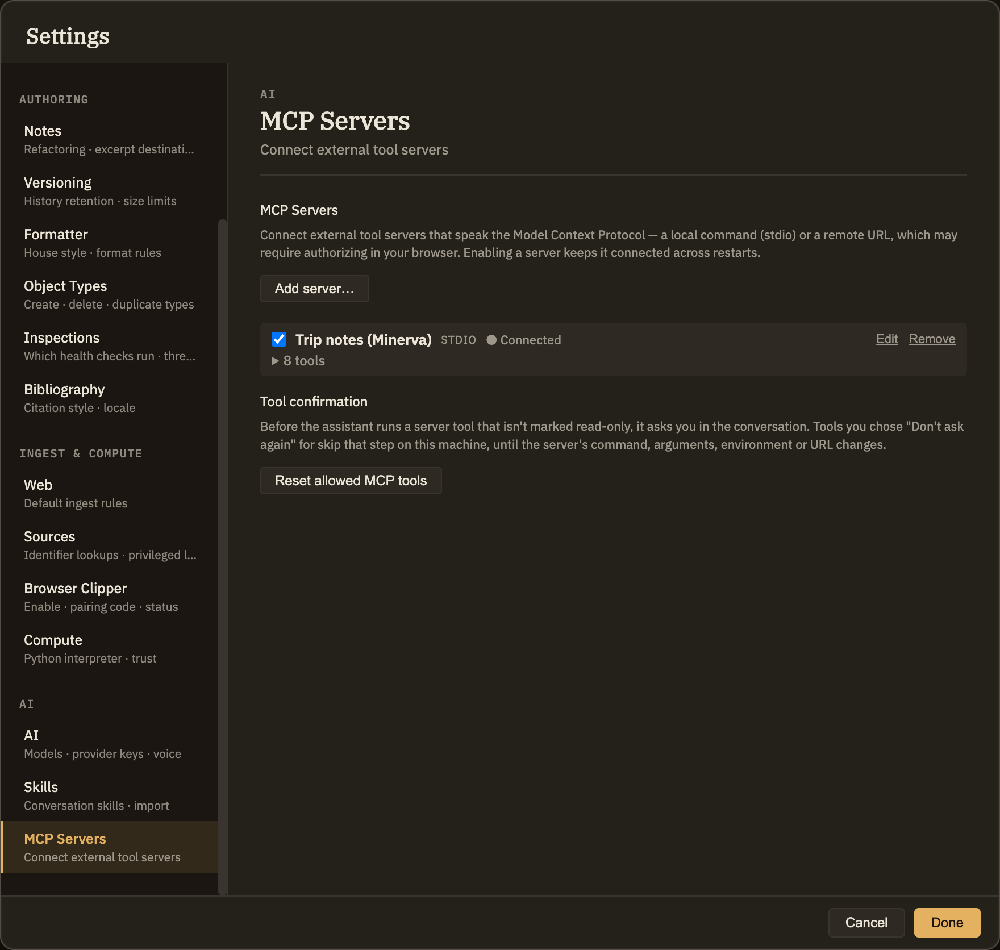

MCP Servers
The Model Context Protocol (MCP) is a standard way for a tool server to offer tools to an AI. This tab is Minerva on the consuming side: point it at somebody else's MCP server and the tools that server offers become available to the assistant while you're chatting. That's the opposite direction from MCP use, which hands your thoughtbase to an outside agent — see Two directions below.
Adding a server
Click Add server…, give it a Name, and choose one of two kinds:
stdio)npx), any Arguments one per line, and any Environment variables as KEY=VALUE, one per line — that's where an API key the server needs goes. The server sees only what you list there plus the few variables any program needs to run (PATH, HOME, your language and time zone settings) — not the rest of the environment Minerva was started with, so keys and tokens your shell exports for other tools aren't passed to it. If a server relied on one of those, add it under Environment.http)Servers are saved in ~/.minerva/mcp-servers.json in your home folder — environment variables included. The values you put under Environment are encrypted with your system keychain before they're saved, and the file is readable only by your user account. A remote server's sign-in tokens are kept separately, also encrypted, in Minerva's application data folder.
The name is how the assistant refers to the server, so keep it short and distinct — two servers sharing a name can't be told apart. A server you've just added starts switched off: nothing is launched or contacted until you turn it on.
What the status says
Switching on, connecting, editing
The switch at the start of each row is the whole control: on connects straight away, off disconnects. Servers left on are reconnected in the background each time you start Minerva, so a working setup stays working. Connect appears on a row that's on but not connected — use it to retry after a failure or to complete a sign-in. Edit changes the name or the connection details. Renaming a server leaves it connected; change its command, arguments, environment or URL and a server that's switched on reconnects with the new details by itself (a remote one that needs signing in shows Connect for that). Changing the command, arguments, environment or URL also voids any Don't ask again choices for that server's tools (see below), since it may now be a different program; renaming it keeps them. Remove disconnects and forgets the server.

Using the tools in a conversation
Once a server is connected its tools reach the assistant automatically — nothing to enable per tool, nothing to type. Ask for something the server can do and the assistant reaches for it, naming the server and tool in the transcript. Only connected servers count: one that's off, failing, or offering no tools simply isn't mentioned to the assistant, so a broken server costs you nothing but the row.
Tools that change things ask first
A tool its server marks read-only — a search, a lookup — runs as soon as the assistant calls it. Any other tool, one that could post a message, open an issue or write a file, stops the turn and shows a card in the conversation first: the server, the tool, what the server says the tool does, and the exact arguments the assistant chose, as they will be sent. Nothing reaches the server until you click Allow (or press Enter in the card). Deny (or Esc) tells the assistant you declined, and the conversation carries on without it. Stopping the turn while a card is up counts as a denial.
Why ask: the assistant reads your notes, sources and web pages, and any of those can contain text written to steer it. Showing you the arguments means an instruction hidden in something it read can't quietly send your notes somewhere.
Tick Don't ask again for this tool to skip the card for that one tool from then on. The choice is kept on this computer only, never in a thoughtbase, so a shared or synced thoughtbase can't switch confirmations off for you. It also stops applying if you change the server's command, arguments, environment or URL, since that may be a different program. To start asking again for everything, click Reset allowed MCP tools at the bottom of this tab.
When there's no conversation window to show a card in — a skill running in the background, the command line — a tool that isn't read-only is refused rather than run, whatever you chose before.
Minerva's approval gate protects your notes and your graph; the card above is the same idea for someone else's service. Whether a tool is read-only is something the server reports about itself, so a badly written or dishonest server could label a tool that changes things as read-only, and it would then run without asking. Add servers you'd trust to act on your behalf.
Two directions, one protocol
They share only the protocol, and can run at once. Nothing here changes what an outside agent sees, and starting Minerva's own MCP server adds nothing to this list — which is kept per computer, not per thoughtbase, so it's the same whichever thoughtbase is open.